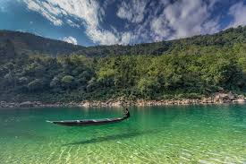

Major Attractions
1. Ialong Park
"At a distance of 7 km from Jowai Bus Stand, Ialong Park is an eco-park situated at Ialong
village near Jowai in West Jaintia Hills district of Meghalaya. Situated on the Jowai-Silchar
highway,
it is
one of the wonderful places to visit in Meghalaya and among the popular places to visit in
Jowai.
Sprawling over an area of 12.80 hectares, Ialong Park is known for its sacred groves and a
viewpoint which offers breathtaking views of Pynthorwah Valley. The park is constantly being
renovated
and
beautified under the Special DRDA Tourism Project taken up by the District Administration. The
place is
well
accommodated with water dams, toilets, canals, changing rooms, etc. A variety of flowers, some
native to
Meghalaya, adorn the park. One can sit on the grassy slopes and enjoy the mesmerizing sunset
from the
park.
The place offers a picturesque view of the paddy fields on the banks of River Myntdu. The park
also has Traveller's nest, run by the Ialong Tourism Cooperative Society Limited, which provides
a
comfortable stay in nature's lap. Treks & camp sites along the meandering Myntdu River are
arranged all
year
round except the rainy season. Besides, the park also hosts monthly archery competitions for the
local
inhabitants as well as tourists.
Timings: 9 AM - 6 PM
Entry: Free"
2. Syntu Ksiar

"At a distance of 4 km from Jowai Bus Stand, Syntu Ksiar is a scenic place
located in Jowai town of West Jaintia Hills district in Meghalaya. Situated on the banks of
Myntdu River, it is one of the lovely places to visit in Jowai and among the famous historical
places in
Jaintia
Hills.
Syntu Ksiar is a vast stretch of land that lies on the banks of Myntdu River. The literal
meaning of Syntu Ksiar is 'the golden flower' in the local Jaintia language. According to the
legend,
the place
got its name from a lady called Syntu of 'Iawchibidi' clan. It is believed that the lady
committed
suicide by
jumping into the river here. After she drowned in the river, a beautiful golden flower bloomed
in the
middle of the river which is said to be very beautiful and cannot be plucked by anybody. Thus,
the place
got
its name from this particular flower which grows here.
Syntu Ksiar is also renowned for being the center of the freedom struggle as this is the place
from where freedom fighter Kiang Nangbah had initiated the freedom struggle against the British.
He was
hanged to death on 30th December 1862 in Jowai town. A memorial has been erected here in memory
of Kiang
Nangbah.
Today, Syntu Ksiar is an ideal picnic and angling spot in Jowai region. It is one of the places
around Jowai where tourists come to relax and enjoy their families while basking in the soft sun
and
cool
breeze from the river. There is a beautiful wire suspension bridge and a water harvesting system
across
the
river. There are also several small fast-food joints around the place where you could enjoy some
of the
local
delicacies.
Timings: 7 AM - 5 PM
Entry: Free"
3. Thadlaskein Lake

"At a distance of 9 km from Jowai Bus Stand, Thadlaskein Lake is a placid lake located at
Mukhla near Jowai
in
Meghalaya. Situated on the Shillong-Jowai highway, it is one of the beautiful lakes in Meghalaya
and among the
major
places to experience Jowai Tourism.
Thadlaskein Lake is a manmade lake and is popular weekend hangout for the locals. Fed by a
perennial spring,
the lake was dug by the followers of Jaintia Chieftain, U Sajar Nangli by using the bottom of
their bows.
Apart from its historical significance, Thadlaskein Lake is also a very beautiful lake and
extremely popular
for outing, picnics, and boating. The lake is surrounded by beautiful meadows and River Myntdu.
Timings: 6 AM - 6 PM
Entry: Free"
4. Krang Shuri Waterfall
"At a distance of 29 km from Jowai and 31 km from Dawki, Krang Shuri Waterfall is a
majestic falls located
near
Amlarem village of Jaintia Hills district in Meghalaya. It is one of the exotic waterfalls in
Meghalaya and
among the top
places to visit in Jowai.
Blessed with shimmering blue waters and sparkling sunlight, Krang Shuri Waterfalls is a stunning
tourist
attraction
that is simply breathtaking. It cascades down from a height of about 40 feet into a crystal
clear blue pool.
There is a steep stone path leading to the falls from the parking place near Amlarem village. It
takes about
30 minutes to reach the falls from the parking lot.
Timings: 7 AM - 6 PM
Entry: Rs. 40 per person & Rs. 100 for Life Jacket"
5. Nartiang Monoliths
"At a distance of 24 km from Jowai, Nartiang Monoliths is a large cluster of monoliths
located at Law
Mulong area of
Nartiang village in Meghalaya. Literally called as 'Garden of Monoliths', the Monoliths Park is
one of the
renowned
monuments in Meghalaya and among the well-known tourist places in Jowai.
These monoliths cover a wide complex of about 100 m in diameter. The Menhirs (Upright stones)
are locally
known as Ki Moo Shynrang, and Dolmens (flat stones in the horizontal position) are known as Ki
Moo Kynthai.
Timings: 9 AM - 5 PM"
6. Thlumuwi Stone Bridge & Falls
.jpg)
"At a distance of 18 km from Jowai Bus Stand, the Thlumuwi Stone Bridge is a manmade bridge
located at
Chkentalang village near Jowai in Meghalaya. Situated on Jowai - Amlarem Road, it is one of the
noted historical
places in Jaintia Hills and among the best Jowai Tourist Places.
Thlumuwi Stone Bridge is an old historical bridge built over Muwi stream by warriors of Jaintia
Hills. The
Bridge was built under the order of the Jaintia kings. It is around 500 years old but was broken
when an
elephant tried to cross it. Now, there is a 50-year-old Steel Bridge and a 10-year-old RCC
Bridge just next to
this bridge.
One can also visit nearby Thlumuwi Falls across Muwi stream. The bank of Thlumuwi stream with
the cascading Muwi
Falls presents a memorable scenic view to every visitor.
Timings: 8 AM - 5 PM
Entry: Free"
7. Tyrshi Falls

"Located about 4 km from Jowai, one needs to trek for about a kilometer on a bridle path to
reach the
falls.
Entry: Free"
8. Jarain Pitcher Plant Lake
.jpg)
"Located at Jarain, in Amlarem subdivision of War-Jaintia region amid the natural habitat
of the
carnivorous pitcher plant -- Nepenthenes Khasiana, spreads over an area of 50,000 square meters.
A pretty lake sits placidly amid gravelled footpaths, arch bridges, pitcher plant garden, and
greenhouse-interpretation center. The railings of the boathouse are styled on the pitcher plant.
A pitcher plant
replica in the middle of the lake doubles up as a fountain.
There are paddle-boats to engage visitors, and the lake is attracting a lot of visitors from far
and near."
9. Dawki

"Located about 54 km from Jowai and 91 km from Shillong, Dawki is famous for the Umngot
River and the
heritage Dawki Bridge built by the British connecting East Khasi Hills and Jaintia Hills
District.
Dawki stands on the International Borderline of India and Bangladesh."
10. Umlawan Cave

"At a distance of 60 km from Jowai, Umlawan Cave is a limestone cave situated at Lumshnong
village in West
Jaintia Hills district of Meghalaya. Also known as Lumshnong Cave, it is one of the famous caves
in Meghalaya
and among the must-visit places near Jowai.
The Umlawan Cave is joined by two other caves, the Umskor and the Kotsati. Around 21 km long and
100 m deep, the
cave is regarded as the longest and deepest cave in the subcontinent. The cave is embellished
with special
formations of stalactites and stalagmites.
Timings: 8 AM - 5 PM
Entry: Free"